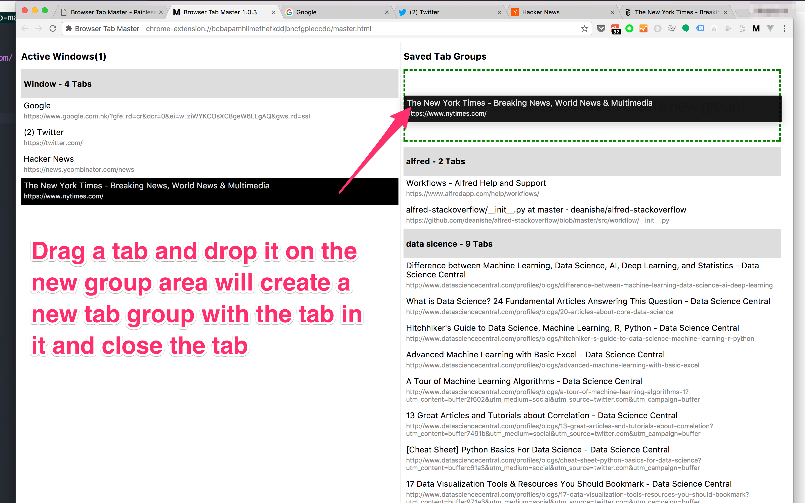
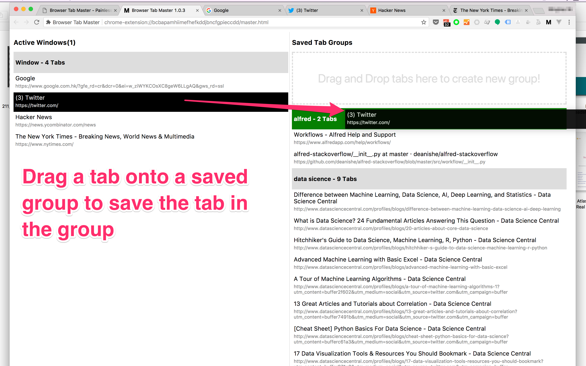
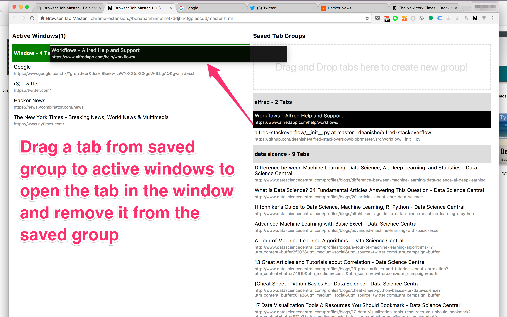

Browser Tab Master - Simple yet Powerful Way to Manage Browser Tabs and Windows
Download from Chrome Webstore
Soruce code on Github.com
Features
- Simple and easy to use, just Drag&Drop
- Saved tabs into groups for later use
- Add tabs to saved groups
- Move tabs from saved groups to browser windows
- Synchronize saved tabs across all your Chrome Browsers(using Chrome built-in synchronization)
- Multiple window support
- Free and Open Source
Upcomming Features
- Move tabs between tab groups
- Move tabs between windows
- Sort tabs display order inside windows with drag&drop
- Open all tabs inside a tab group with one click
- Remove tabs from a tab group without opening it
- Export saved groups to tsv file, and import saved groups from tsv file


